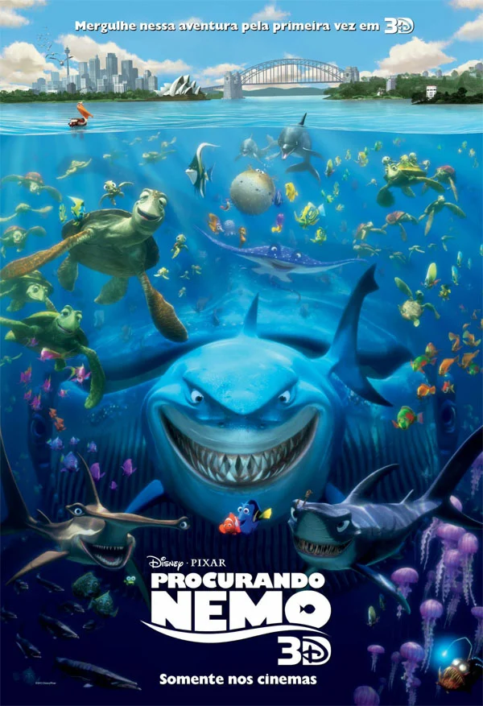
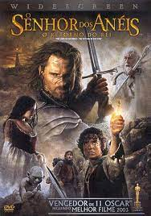
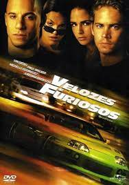
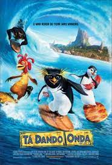
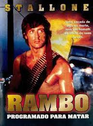

TOP 5 Filmes
O passado reserva tristes memórias para Marlin nos recifes de coral, onde perdeu sua esposa e toda a ninhada. Agora, ele cria seu único filho Nemo com todo o cuidado do mundo, mas o pequeno e simpático peixe-palhaço acaba exagerando durante uma simples discussão e acaba sendo capturado por um mergulhador.
A história narra o conflito contra o mal que se alastra pela Terra-média, através da luta de várias raças - Humanos, Anãos, Elfos, Ents e Hobbits - contra Orques, para evitar que o "Anel do Poder" volte às mãos de seu criador Sauron, o Senhor Sombrio.
Em Velozes e Furiosos (The Fast and The Furious, 2001), o policial Brian O' Connor (Paul Walker) é infiltrado no mundo das corridas de carros ilegais para juntar provas e capturar Dominic Toretto (Vin Diesel), líder da gangue e procurado pelo FBI.
Cadu Maverick é um grande surfista fã de surfe. Seu ídolo Big Z falecido há alguns anos foi sempre sua inspiração para se desenvolver dentro do surfe. Usando um colar presenteado pelo seu próprio ídolo, Cadu passa os dias de sua vida surfando e se imaginando o campeão da categoria.
Rambo (Sylvester Stallone) é um veterano da Guerra do Vietnã que é preso injustamente pelo xerife Teasle (Brian Dennehy), mas consegue fugir e promove uma guerra não só contra o policial mas contra toda uma cidade, causando pânico e destruição, que é o que ele sabe fazer de melhor.
